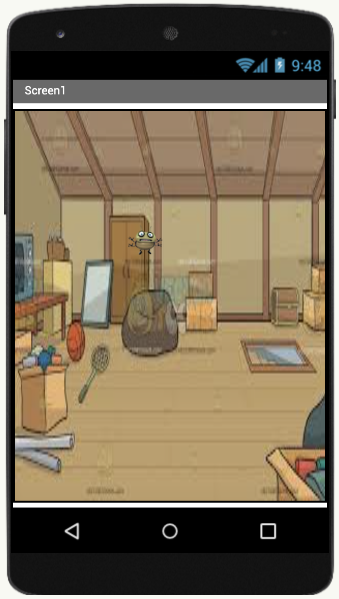

Project 1: The BopIt App
About This Project
This is a detailed description of the project. You can explain its purpose here. For example, this Website Scanner was built for our cybersecurity unit to automatically crawl a given URL and check for common issues like broken links, missing alt tags, and insecure form handling.
The main goal was to learn about web crawling (using BeautifulSoup) and making HTTP requests (using the Requests library).
Featured Code
Here is a key function from the project. You can paste your code inside the tag.
Project Demo
A sample run showing the tool in action.